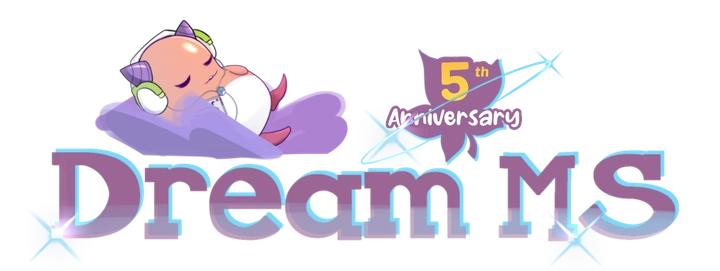

Party Quest Guides
Guias em português para jogar em grupo no Dream MS.

Henesys PQ
Loot importante
A Rice Cake on Top of My Head · 25% a 30% de chance ao completar
O chapéu faz parte do Party Quest Set.
-
Colete as seis sementes
Bata nas plantas com o ataque básico até conseguir uma semente de cada cor. Use a imagem como referência de coleta.

Abrir referência das plantas -
Coloque as sementes nas plataformas
Solte cada semente no chão da plataforma correspondente.
Semente Plataforma Azul (Blue) Superior esquerda Verde (Green) Superior direita Amarela (Yellow) Esquerda Roxa (Purple) Direita Marrom (Brown) Inferior esquerda Rosa (Pink) Inferior direita 
-
Proteja o coelho e entregue os bolinhos
Depois que as seis sementes forem colocadas, o coelho aparece e começa a preparar os bolinhos. Proteja-o dos monstros até ele produzir 10 bolinhos. O líder da party deve coletar os dez e falar com Growlie para concluir a PQ.

Kerning PQ
Forme uma party de 3 a 6 pessoas. No Dimensional Mirror, entre na Party Quest Zone e fale com Lakelis. Requisitos no Dream MS.
Loot importante
Squishy Shoes · 90% de chance no King Slime da PQ, segundo o DreamLib. Cai um par, para um jogador pegar.
A bota faz parte do Party Quest Set.
-
Sala 1 · Cupons da Cloto
- Fale com Cloto para receber uma pergunta.
- Derrote Ligator e fique com o número exato de cupons que responde à pergunta.
- Cloto troca os cupons por um Pass.
- Quem receber o item deve soltá-lo para o líder.
- O líder fala com Cloto para abrir o portal.
Obs. Se sobrar cupom, solte o excesso antes de falar com ela.
Perguntas de referência · lista parcial
- Level to become a Warrior, Magician, Bowman or Thief · 10 cupons
- EXP needed to reach level 2 · 15 cupons
- Level needed to enter KPQ · 21 cupons
- Total AP gained from level 1 to level 6 · 25 cupons
- Level needed for 2nd Job Advancement · 30 cupons
- Total of SP a beginner receives · 6 cupons
-
Sala 2 · Cipós
Três jogadores se penduram em três dos quatro cipós. Fiquem da metade para cima para facilitar o registro da posição e aguardem o líder confirmar cada tentativa.
Ver 4 tentativas
Tentativa Posições Ocupação 1 A–B–C 2 A–B–D 3 A–C–D 4 B–C–D 
-
Sala 3 · Plataformas dos gatinhos
Ocupem três das cinco plataformas. Identifiquem cada plataforma pela quantidade de gatinhos e peçam ao líder para confirmar cada combinação.
Ver 10 tentativas
Tentativa Posições Ocupação 1 1–2–3 2 1–2–4 3 1–2–5 4 1–3–4 5 1–3–5 6 1–4–5 7 2–3–4 8 2–3–5 9 2–4–5 10 3–4–5 
-
Sala 4 · Barris
Ocupem três dos seis barris, usando a numeração da imagem. O líder confirma cada combinação quando todos estiverem posicionados.
Ver 20 tentativas
Tentativa Posições Ocupação 1 1–2–3 2 1–2–4 3 1–2–5 4 1–2–6 5 1–3–4 6 1–3–5 7 1–3–6 8 1–4–5 9 1–4–6 10 1–5–6 11 2–3–4 12 2–3–5 13 2–3–6 14 2–4–5 15 2–4–6 16 2–5–6 17 3–4–5 18 3–4–6 19 3–5–6 20 4–5–6 
-
Sala 5 · King Slime
Derrotem 6 Jr. Neckis, 3 Curse Eyes e o King Slime. Recolham todos os Passes que caírem e passem para o líder, que fala com Cloto para concluir a PQ. O King Slime também pode derrubar as Squishy Shoes.
Mapa da Sala 5 · OSMS Data Explorer A sala bônus é opcional. A PQ já está concluída quando Cloto aceita os Passes.

Mapas de referência de NiaMeowDB. Sprites do DreamLib.
Ellin PQ
Forme uma party de 2 a 6 pessoas. Pelo Dimensional Mirror, entre na Party Quest Zone e fale com Ellin.
Loot importante
Glittering Altaire Earrings · troque 2 Altaire Fragments pelos Altaire Earrings e depois entregue os brincos com mais 3 fragmentos para aprimorá-los.
Os Glittering Altaire Earrings fazem parte do Party Quest Set.
-
Sala 1 · Limpe o caminho
Derrote todos os monstros e siga pelo portal.
-
Sala 2 · Poções rosas
Atraia os monstros dos dois lados até a poça perto da árvore central e mate-os ali. Espere a poção roxa ficar rosa antes de pegar. Junte 4 poções rosas e solte uma por vez junto à trepadeira do portal à direita.
-
Sala 3 · Labirinto de portais
Dividam-se entre os portais. Quem achar a NPC fala com ela para levar a party inteira à próxima sala.
-
Sala 4 · Capture os monstros
Fale com Ellin para receber 10 orbes verdes na aba USE. Enfraqueça os monstros e use os orbes para capturá-los. Como a barra de HP fica escondida, conte os golpes para evitar matar o alvo.
O líder reúne 20 orbes de captura da aba ETC e entrega a Ellin.
-
Sala 5 · Plataformas e caixas
Subam pelas plataformas e dividam-se entre as rotas da esquerda, do meio e da direita. No topo, quebrem as caixas com ataque básico. Entreguem a pedra roxa ao líder assim que encontrarem.
-
Sala 6 · Boss e fragmento
Solte a pedra roxa em frente à estátua para invocar o boss e derrote as três formas. Recolha o orbe roxo que cai no final.
Antes de sair, solte o orbe no poço coberto de trepadeiras. Espere o poço acender e saia para receber um Altaire Fragment.